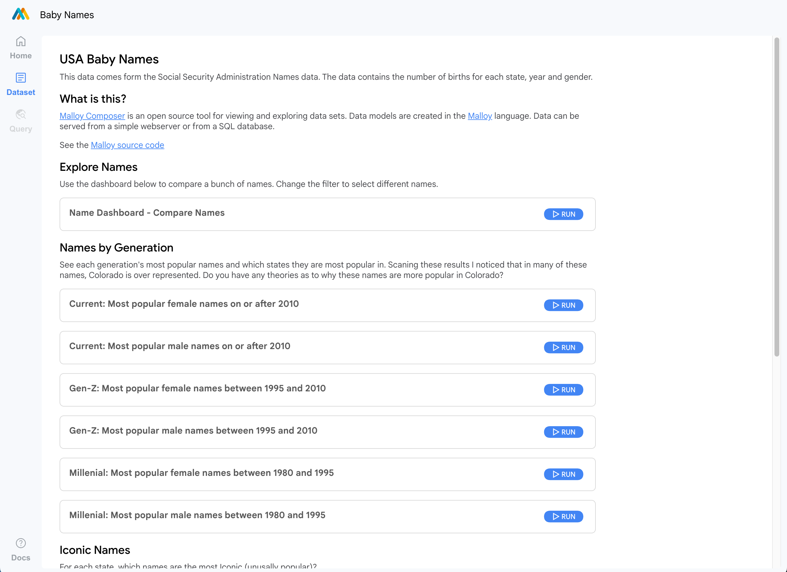

All Posts
All Posts
Malloy Composer lets you build a web based data exploration experience by adding just 3 files to your data model.
November 24, 2022 by lloyd tabb
Try it First.
Believe it or not, the page below runs entirely in your web browser. The SQL database engine (DuckDB) is running in your browser. The Malloy compiler is running in your browser too. The whole application is built with 200 lines of Malloy code, a config file, a markdown document and a single html file. Just look at the repository on Github.
It’s easy, just follow the three steps below.
Step 1: Build a Malloy Data Model
Install VSCode and add the Malloy Extension. Build and test your data model.
Step 2: Add the index.html, composer.json and names.md
The file index.html shouldn’t need any modification. Edit the composer.json to point at your malloy file and the tables that it uses. Rename and edit the names file to have queries that are interesting to you.
Step 3: Serve from any webserver
We use Github Pages to serve the above example. Check in all your source code, turn on Github Pages and your whole repository is available from the web. Point a browser at the root and composer should be running.